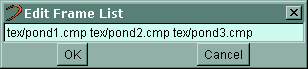
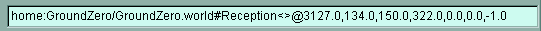

WorldsShaper Procedures | |
|
|
|
Moving ObjectsWorldsShaper offers three different methods for moving objects in 3D space, each with different advantages:
To move objects to a different level of the Hierarchy Tree, or a different room, use the cut and paste commands. There is also a Snap Tool which will allow you to set a snap increment for objects. This feature will place objects such that their origins are at some multiple of that increment. For example, if you set an increment of 50 for x and y, you could place objects at (150, 250) but not at (229, 510). The tool will snap the object to the nearest point that matches the criteria. To activate or change the snap increments, go to the Edit Menu, Snap Tool Settings. Using the Move Buttons
Editing the From and To PropertiesThis method is most useful when you need to fit an object into a specific position. The From property identifies the x,y,z coordinates of the bottom left corner of an object. The To property identifies the coordinates of its top right corner. Changing the positions moves an object. (If you also change the relationship between the positions, the object will be resized as well as moved. Check the Extent property to see whether the width or height has changed as a result of changes to the From and To properties. Click the Undo button above the Properties Box if you have changed the object in ways you did not intend.) To edit the From and To properties, follow these steps:
Editing the Transform Property
Moving to an exact location or moving in incrementsIn the following cases, N is the distance in units to move the object. A negative number is acceptable if you wish to move the object down the x, y, or z axis.
Pitch, roll and yaw: changing an object's orientationIn the following cases, N is the angle in degrees to revolve the object. A negative number revolves in the opposite direction.
Mixed rotationsIn the following cases, N is the angle in degrees to revolve the object, and x, y, and z indicate the axis of spin. For example, [0,0,1] spins on the vertical z axis. A negative number for either value, such as [0,0,-1] (for x, y, and z) or -1 (for N), revolves in the opposite direction.
Scaling to exact measurement
Scaling by a factor
When you're finished in the Edit Transform box, click OK. |
Connecting PortalsNote: You must create both Portals first before trying to connect them, referring to each portal by name. Note that you can create the second room (and its corresponding portal) while still in the first room -- see Tutorial 1: Lesson2 for detailed instructions. To connect one portal to another portal, follow these steps:
To connect the destination portal back to the current room, walk into the newly connected room through the portal you just connected, turn around and select the destination portal. Follow the steps above, connecting the destination portal and name to the current room. NOTE:If you ever see this type
of message: Portal Portal331 specifies a connection to null#Room#SomePortal which isn't a portal! you've most likely misspelled either the Destination Room Name or the Destination Portal Name. Make sure that you have typed in the names exactly - upper and lower case letters, blank spaces, etc. |
Connecting WorldsTo connect two worlds, you will need to add a RemotePortal action to the portals that are going to be connecting the two worlds. NOTE: Currently there are Remote Portals listed in the Objects Library. These are obsolete and will be removed in a future version of WorldsShaper. To connect two worlds via portals, follow these steps:
If a world you are connecting to takes awhile to load, you will see a default solid color where the portal is until the world has finished loading. To avoid this, you must add a texture to the portal itself. You will only see the texture when the world on the other side is loading. To add a texture to a portal, follow these steps:
|
Adding an Item from a LibraryThe libraries can be viewed with icons or just with text. Under the Libraries menu at the top of WorldsShaper, click on Icons On/Off to toggle between the icons and text. All of the libraries use the same "drag and drop" method to add a library item to the hierarchy or to another object. To add an item from a library, follow these steps:
|
Adding an ObjectTo add an item from the Objects Library, follow these steps:
|
Objects CatalogParameters common to all objectsThere are seven parameters that all Objects share in common. These are:
Walls, Floor and CeilingYou can choose from four walls as objects: North facing (Cyan), South facing (Yellow), East facing (Magenta) and West (Red). The default size of each wall is 1000 WorldsShaper units wide by 240 WorldsShaper units high. The Cyan wall's lower left corner comes in at the coordinates 0,0,0, the Yellow wall at 0,1000,0, the Red wall at 1000,1000,0, and the Magenta wall at 1000,0,0. A Ceiling and Floor are both 1000x1000 WorldsShaper Units. Specific properties of Walls, Floor and Ceiling
Shape (empty)A shape is any .rwx or .rwg file you want to add to a room, such as a table. Specific properties of Shape
2 Walls Grouped with a PortalThese are pre-built WObjects that contain two small walls with a portal inbetween them, their total width = 1000 WorldsShaper units. They are listed in the Objects Library as South Wall/Portal, West Wall/Portal, etc., and have the same properties as a normal WObject (see Grouper). NOTE: Currently there is a bug with portals grouped in a WObject. They will not connect with other portals. You will have to delete the Portal from the WObject contents (listed as "east facing", "west facing" etc.), and then add a single Portal to the Room Environment Contents to replace it. Grouper (WObject)WObjects allow you to group objects together. Moving and scaling the WObject affects all of its contents as a group. NOTE: The Visible parameter of a WObject does not work. To make a WObject invisible/visible, you would have to change the Visible parameter of each of the WObjects contents individually. Hologram (empty)A Hologram is a "fake" 3D object. It is actually a .mov file that contains 1 or more 2D views of an object. To add a Hologram to a room, drag a Hologram (empty) object to the Room's Contents in the Hierarchy Tree. You then double-click File under Hologram Properties and add a .mov file to the empty Hologram. Specific properties of Hologram
Default RoomThe Default Room object is just that, a default square room (1000x1000) with four walls, a floor and a ceiling. You add a Default Room to the Rooms section of the Hierarchy Tree (near the top of the tree). When you drag and drop a Default Room into the Hierarchy Tree, a new room will be listed there, but you won't be able to see it in the 3D viewer. To get to the new room, go to WorldsMarks and choose the Change Location option. Change the room name within the URL to the new room's name and click OK. You will be teleported to the new room. Specific properties of Default Room
Portal (North, South, East and West)Portals are basically doorways that connect rooms and worlds together. A Portal's default size is 250 wide by 240 high. You can alter a portal's size, but it's a good idea to keep connecting portals the same size. Portals are generally added to a Room's Environment Contents. To connect two worlds together, you will need to add a RPAction (Remote Portal Loading) to the portal. Specific properties of Portals
You can add a texture to a portal just like you would a rect. The texture will only appear if the room or world that it's connecting to hasn't loaded yet. This is useful when a portal is connecting to another, larger world that takes awhile to download. If you didn't assign a texture to your portal, the user would see the default solid color of the portal. If you add a texture to your portal, use the properties below to change the tiling.
Nametag DroneUnder development. Floor PatchA Floor Patch is used when you want a floor that's not level. With a Floor Patch, you can create hills and/or valleys. Avatars will walk up or down these patches accordingly. For the Floor Patch to work, it must be added to the Room Contents, not the Environment Contents. As a whole, you can move a Floor Patch horizontally and you can scale it, however you can't move it up or down the z axis. To change the location of a Floor Patch along the z axis, each corner must be raised separately (see parameters below). You can add a texture to the Floor Patch, or you can add regular floor rects over the patch, texture them, and make the Floor Patch invisible. To add a texture to the Floor Patch itself is just like adding a texture to a normal rect. Find Texture listed under the Floor Patch Material in the Hierarchy Tree and select it to bring up the MaterialTexture Properties in the Properties Box. Double-click File and then enter the relative URL for the texture you want to apply. When you click OK, you'll notice that nothing happens. You have to select the Patch in the Hierarchy Tree to bring up the RectPatch Properties. Double-click on # tiles (x) or # tiles (y). You don't have to enter any numbers into the box, just click OK and the texture will appear. Specific properties of Floor Patch
PosableShapeThe PosableShape is used when you want an avatar or "bot" in your world. To add an avatar to your world, drag and drop a PosableShape object to the Contents of the Room you want the avatar to be in. A red dot appears at 0,0,0. To see the default avatar, double-click on File under PosableShape Properties and change avatar:aura.OPG.rwg to avatar:aura.rwg, or replace "aura.rwg" with any avatar name listed in the VIP/Change Avatar list. Use the horizontal move button or Transform property to move the avatar to the location you want. To make your avatar walk when triggered, add a Move action to the PosableShape (the avatar will automatically walk when moved). To make your bot perform an action other than walking, add a Posable action to it. Specific properties of PosableShape
Double DoorwayA Double Doorway object is a portal with two doors, a door jamb and a built-in move action and sensor so that the doors open as a user approaches. When you add a Double Doorway, add it to the Room Environment Contents. In the Hierarchy Tree it will be listed as DoorwayPortal, and it will come in to the room located at 0,0,0 and be facing south. Use the DoorwayPortal's Transform property to move the DoorwayPortal to its final location. The door jamb is 25 WorldsShaper units deep, and when you get the door oriented the way you want it, you will need to move the DoorwayPortal back into the surrounding wall 25 WorldsShaper units (otherwise the door jamb will be sticking out into the room). The doors and door jamb are part of the DoorwayPortal's Contents. Texture each one of these rects as desired. The specific properties of Double Doorway (DoorwayPortal) are the same as the specific properties of a Portal. Shaped RoomA Shaped Room and SlowShaped Room (see below) are used when importing rooms that have been built in a 3D modelling program such as 3D Studio Max. You add a Shaped Room to your world just as you would a Default Room. Drag and drop the Shaped Room into the Rooms section of the Hierarchy Tree. A Shaped Room's properties are the same as for a Default Room. The difference lies in the presence of a RoomShape within the ShapedRoom's Environment Contents. In the RoomShape Properties, you use the File property to designate the 3D Model file you are importing (an .rwx or .rwg file). SlowShapedRoomA SlowShaped Room is almost the same as the Shaped Room above. The only difference is that the RoomShape is located in the Room Contents instead of the Environment Contents - hence the "Slow" part of this object's name - it will slow down the rendering of the room to have the RoomShape in the Contents vs. the Environment Contents. TwoWayPortalA TwoWay Portal was designed to automatically create its counterpart (the portal it's connecting to) in the connecting room. However, it currently has some problems, and it's probably easier to simply create the two portals yourself. MontyDoorA MontyDoor (named after Monty Hall from the show "Let's Make a Deal") is a portal for viewing avatars (as in the Avatar Gallery) or 3D merchandise (as in the 3D WorldsStore). When a user clicks on a Monty Door, it gives them the option of changing their avatar (SelectAvatar action) or in the case of the store, they can get more information on the selected merchandise (SendURL action). To see how this works, go to the Avatar Gallery and right click on any of the avatar posters, or go to the 3D store and right-click on any of the merchandise. WearWallThe WearWall object is used in conjunction with other rects that have click sensors. These click sensors are configured to trigger the Wear Wall so that a user can change the texture or head of their avatar ( e.g. in the Gallery of Metamorphics or the Dressing Rooms within the Avatar Gallery). To learn how to create a Wear Wall, go to theCreating a Wear Wall section of this document. AnimatingDoorAnimating Doors use a frame list of 2D images to simulate the opening and closing of a door. Rather than have a rect or rects physically open with a Move action, the Animating Door plays an animation as you approach the door, and the animation in reverse as you walk away from it. You can also add opening and closing sounds, and an Animating Door also includes the portal needed to connect to another room. Examples of this type of door are found in the old Worlds Center (Worlds Chat space station). If you go to the Hub of the space station and look at the doors there, you'll see that they use Animating Doors. Currently there's a bug where the AnimatingDoor comes in only 1x1 in size, located at 0,0,0. Use the Extent and Transform properties to size and move the door into position. Specific properties of AnimatingDoor
The rest of the properties of AnimatingDoor are Portal Properties. Change these properties as you would for a normal portal. Ad BannerTwo new objects introduced in GDK 1844, the Ad Banner and Web Page object replace the Billboard attribute. An Ad Banner object comes in the size of a default ad banner, 468 x 60, while a Web Page object by default comes in at 640 x 480. Both objects display web pages on a 2D rect, allowing for web-based content to be integrated into a 3D world. Specific properties of Ad Banner
Web Page WallTwo new objects introduced in GDK 1844, the Ad Banner and Web Page object replace the Billboard attribute. An Ad Banner object comes in the size of a default ad banner, 468 x 60, while a Web Page object by default comes in at 640 x 480. Both objects display web pages on a 2D rect, allowing for web-based content to be integrated into a 3D world. Specific properties of a Web Page Wall
Video WallA Video Wall, introduced in GDK 1844, replaces the Video Texture attribute. It is a rect with the URL of a video attached to it, allowing for a video to be played on the rect within a 3D space. It can be used in conjunction with the VideoControl action which allows the user to control the playback of the video. NOTE: When you add a Video Wall it may take a while for it to appear in the room and in the Hierarchy Tree. This is because a default video is attached to the wall with Auto-play turned on. The Video Wall will appear and the default video will start to play. Specific properties of a Video Wall
|
Adding an ActionTo add an item from the Actions Library, follow these steps:
|
Actions Catalog
Parameters common to all actionsThere are two parameters that all Actions share in common. These are:
WaitWait is a pretty straightforward action. You set a WaitAction property that specifies how many seconds the action should wait. When triggered, all the action does is start, wait that number of seconds, and then it's done. Wait is generally used as part of a Sequence. Specific properties of Wait
StdoutThis action writes text to the "standard output", which means that if the user has a log file going, the text will appear there. Useful for debugging. SequenceSequence is an ordered list in which you can put other actions, actually "pointers" to actions located in any object.
Specific properties of Sequence
Adding a Sequence
Adding actionsTo add actions to a sequence, find the sequence in the Hierarchy Tree and click on its Components. This List will initially be empty. Click the Add button and add previously created actions into your sequence, one at a time (when the Add to Components box comes up, click on the downward-pointing triangle to the right of the first listed action. This will reveal a list of all the actions you have previously created). Note that you should try to add items to the sequence in the exact order they will run. When you Add another action to the list, it will always add to the last position, there is no insertion point! However, you can Delete from any point in the List. You can overcome the no-insertion-point problem slightly by careful use of Cut and Undo, because you can Cut from anywhere in the list but Undo will always place the action last in the list. Synchronization issues: MultithreadingAnother problem you might run into with sequences is that each item in the sequence's Components needs to finish executing before the next item can begin. This has the following unfortunate consequences:
WaitBecause of the multithreading issues and also for general utility, you will frequently be placing Wait actions into your sequences. Wait actions are another case of an action that can be owned by just about anything. A good practice is to have all the wait actions for your world placed inside some easy-to-find object like the first room's Actions list. Remember that you can share the same wait action for several different sequences but if you change the timing by double-clicking the Wait in any given sequence you'll be changing the "master", not a copy. You might create a library of several commonly used units of time in progressively larger steps, for example .2 seconds, 1 second, 5 seconds, 30 seconds. Then you can always insert 2 1-second waits to substitute for having to make a whole new 2-second-long wait action from scratch someplace, and you can avoid clutter in the list whenever you add an Action. Editing actions from within a sequenceYou can click on any action within a sequence to make changes to its properties listed in the Properties Box if you'd like. But again, remember that you are really just taking a "shortcut" to where that action really exists, and if you edit an action in a sequence, the changes you make will show up in every other sequence that uses that action, as well as in the action's "master" back in whatever object it's owned by. However, if you Delete an item from a sequence, you won't be deleting the "master", just a copy, and clicking the Owner button after double-clicking an action in a sequence will take you back up to the sequence, not to the action's real owner. Sequences within sequencesSince a sequence is itself an action, there's no reason why you can't nest other sequences inside a larger sequence. Just keep in mind that the entirety of the nested sequence needs to be executed before the next item in the larger sequence's list can be started. And don't make the mistake of putting a sequence inside itself! We make no guarantees about what will happen in this case. AnimateAnimate places bitmaps on an object and cycles through them in a specified linear sequence. You can apply an animation to objects like walls that take a Materials property for textures, but you won't be able to "animate" a Shape in this way, because a Shape's textures are stored internally. If you just want to move a Shape through space (or a wall for that matter), you'll want to use the Move action instead. Tiling is the same as the Material that existed on the wall before you start the animation. For instance, if you have tiled a wall to repeat its texture four times horizontally (250,0 tiling on a 1000-wide wall) any animation you attach to the wall will also tile four across. For this reason you might want to attach animations to separate rects rather than to architectural walls of a room. Specific properties of Animate
 GravityWhen the Gravity action is triggered, it will pull users (their camera) to a specified point in the room. There is no escaping a Gravity action - no matter where you are in a room, if you trigger it, you will move to the designated point. When a Gravity action is applied to a wall, the user's camera will be pulled to the lower left corner of the wall (where the red dot is when the wall is selected). Since the camera height for avatars is set at 150, the user would sink into the floor until its "eye height" was at the lower left corner. Since this probably isn't the desired effect, what you need to do is create a copy of the wall to attach the gravity action to. For example, if you wanted the Gravity action to carry you to the center of a room, you would first make a copy of a wall. Attach the Gravity Action to the copied wall. Make the copied wall 1 pixel high and one pixel wide, and position it at 500,500,150 (assuming a default 1000x1000 room). Now when the Gravity action is triggered, the user will be pulled to the center of the room. Specific properties of Gravity:Force - This number is how "fast" the user gets pulled toward the target of the gravity action. The higher the number, the more of a "tug" the user receives. The default is set at 300. Move
Move replaces the old-style behaviors that don't have sensors, like Spin and Post-spin, and also allows you to dynamically move objects through space. For instance, you can use the Move action to spin a door rectangle on its z axis to make it look like it is swinging closed, or to make a ball appear to roll across the floor instead of just spinning in place. All Move actions take place around or from a point on any given object that usually its bottom left corner for rects or an approximate center for a Shape. But some objects that you've added, particularly default walls and floors/ceilings, may already have a transform applied to them. For instance, a floor is really just a wall pitched over 90 degrees, and a West wall is really an East wall with a 180 degree rotation , so the initial position may not be what you expect in an absolute coordinate sense. As a result, it can often take some experimenting to get the Move action to do what you want. You may have to flip objects upside down or turn them around to get the origin in the right place for your particular move action. Look for the red dot in any given object: that dot will be the origin around which move actions will take place. There are essentially two ways to establish a Move action: a playback/record metaphor and a by-the-numbers metaphor. You can use either, but follow the instructions given here carefully. The playback-record method
The by-the-numbers method
Specific properties of Move
Move tips and tricks
Print outputs text to WorldsShaper's text window, the same area where chat messages show up if you're hooked up to a multiuser server. A practical use for this is to combine Print with a Startup sensor to give your user a welcoming message when they enter the world. The Print action can be attached to any object within a room or within a room's Actions list. Specific properties of Print
PickupThis action is currently under development and does not work. RemotePortal Loading (RPAction)A RemotePortal action is adding to portals that will be connecting worlds. To create a new RPAction, you must place it in the Actions List of the portal itself, not in the room or other objects in the room. Most often a SameRoom sensor is used to trigger the RemotePortal action. You could however use a Startup or other sensor to change the point in time where the user will "take the hit" of having to stop and load a .WORLD file into memory, potentially as a download. Or you could put the SameRoom Sensor in a different room, for instance to have the world behind the RemotePortal start loading while you're still two or three rooms away, rather than when you're already in the room. Note: The major modifiable characteristics of a RemotePortal Loading action are which portal it's placed in and what type of sensor triggers it. ParallelThis action is currently under development and does not work. Activating a Parallel action will activate all of its targets simultaneously, allowing you to set several sequences into motion at once. SoundIn a Sound action, you may specify a sound in any number of formats. If you enter a URL to a Sound ending with .wav or .mid, then that WAV or MIDI file will be played. These types of files may point to files on the user's local hard drive bundled with the world. For URL's ending with any other extension, the URL will be passed as-is to Windows Media Player, which will attempt to play the URL given. You could in this manner point to streaming audio for example. Unfortunately, since Windows Media Player can't interpret Worlds' home:/ URL's, you can't specify local files in a sound action other than wav or midi files, since Windows Media Player doesn't know where the world was installed on the user's hard drive. This is a known limitation that we hope to resolve, in order to allow things like playing MP3 files and other new audio formats that come along. The Music Manager (in the Options menu of the WorldsPlayer Interface), used primarily for room-based background music, works similarly. .WAV and .MID files are processed by Worlds through Windows' Media Control Interface. Any other file extensions are passed to Windows Media Player, which will play the sound if it can. Note that only the Windows Media Player "engine" is utilized by Worlds; specifying a URL to be handled by WMP will not result in the Windows Media Player application being launched or displayed; it will simply play whatever audio you have sent it in the background. Specific properties of Sound
Allowed sound types
SetVisibleBumpableModifies the Visible and Bumpable property of an object "on the fly" in response to a sensor. After you trigger a SetVisibleBumpable action and then look at the object's Visible and Bumpable properties, you'll see that they've been switched in response to the action and will remain that way until you edit them by hand or set off another action that changes them back. Specific properties of SetVisibleBumpable
TeleportWhen triggered, the Teleport action causes the user to be teleported to a designated room or world. After adding a Teleport action to an object, go to the room or world where you want the user to be teleported. Find the spot where you want them to land and stand there. Use the WorldsMark/Change Location option to see the URL of your current position (See image below). Copy the full URL and return to the object that has your teleport action attached to it. Use the various parts of the copied URL to set the Teleport properties (see examples next to each property listed below).  Specific properties of Teleport
URL (SendURL)URL allows you to launch web pages in response to the triggering event. The default browser used by WorldsPlayer is Internet Explorer. Specific properties of URL
TalkTalk is another way that you can attach triggerable text messages to an object. But this time the talk will appear to be coming from the username who created the action in the object rather than just appearing in the interface, and it requires that anyone receiving a Talk action be online (Print does not). DispenserCurrently under development. This action does not work at this time. Playback RecordingNew actions have been added to WorldsShaper as of revision 1830 to control the new Recorder feature. With these actions, you could record "3D cutscenes" and play them back in response to some trigger in the world... for example, a cheat button in a puzzle could play back a recording of a user solving the puzzle. The only property of the Playback Recording action is the "FileName", which should be a URL to the recording file you wish to play back. Stop RecordingThis action, which has no properties, will stop any currently playing recording (See Playback Recording above). The SET ActionsThese actions alter the properties of another object. As an example, if you wanted to let the user select the force on a Gravity Action, you could set up 2 buttons that have a SetInteger Action (since Force is an Integer) on them with different settings and with the Gravity Action as a target. Click one and you go fast, click the other and you go slow. Specific properties of the SET actions
SetIntegerThis action alters any property of an object that is an integer. SetFloatThis action alters any property of an object that is a floating-point number (one that can have a decimal value). SetBooleanThis action alters any property of an object that can be set to true or false. SetStringThis action alters any property of an object that is a string (of text). SetColorThis action alters any property of an object that is an RGB value. Set2DPointThis action alters any property of an object that is a 2-dimensional point in space. Set3DPointThis action alters any property of an object that is a 3-dimensional point in space. SetURLUnder development. SelectAvatarWhen a Select Avatar action is applied to an object and then triggered, the user is presented with a dialogue box that asks "Change avatar to (specified avatar)?". If the user selects "yes", their avatar changes to the specified avatar. Specific properties of Select Avatar
WearThis action is used in the creation of a "Wear Wall" (e.g. in the Gallery of Metamorphics). To learn how to create a Wear Wall, see the How to Create a Wear Wall section of this document. PosableThe Posable action allows you to assign triggerable actions to a "bot" or avatar that you have placed within a world. You can only use the actions that a particular avatar already possesses - see the Actions list of each avatar. For example, if you have the avatar Charlie in your world, you can assign the following Posable actions to him: Wave, Yes, No, Happy, Upset, GetLost, Look, Flip, Dance, Rocknroll, Macarena, Pirouette, Twirl, Achoo, Bow, and Sleep. If you assign a Move action (make it move from point A to point B) to an avatar you have placed in a world, the avatar will automatically use a walking action while in motion. To assign a Posable action, you will first need to add an avatar (Articulated object) to your world. See Articulated under Object Catalog. You then add the Posable action to the avatar (listed as PosableShape in the Hierarchy Tree) and some kind of sensor to trigger the Posable action. NOTE: At this time, Posable actions will only run through the specified action once (you cannot loop them) and they also cannot be added to a Sequence action. Specific properties of Posable
TradeThis action is currently under development. MoveCameraThis is a new action that is still under development. It is an action that would affect whatever camera triggers it. Designed for events like "fly-throughs" of a world. OpenURLThe OpenURL action opens a 2D browser window within the 3D chat window, not as a separate window. This 2D browser has a simple toolbar (back, forward, stop, refresh, home and back to 3D). The 2D window is anchored at the lower right corner of the 3D viewing window, so if you specify the width and height of the OpenURL action to be smaller than the 3D window, the resulting 2D browser window sits in the lower right corner of the 3D viewer. Specific properties of OpenURL
VideoControlThese controls are used with a VideoWall that will play an .asf (video) file on a rect. The VideoControl actions (one for on, one for off) must be attached to the rect that will have the video on it. For an example, see the TV above the counter in the Burkittsville Diner (BlairWitch World). Specific properties of VideoControl
NotifyScriptThis action only used in Worlds.com produced worlds. CameraHeightWhen triggered, the Camera Height action causes the camera of the user to change to the specified height. If the user is in a third person mode (shoulder, overhead, etc.) the camera changes relative to it's current height and angle. Specific properties of CameraHeight
|
Adding a BehaviorTo add an item from the Behaviors Library, follow these steps:
|
Behaviors Catalog
Click SensorA Click Sensor triggers its target whenever the user clicks anywhere on the object's bounding box. There are several parameters you can adjust in addition to the name: Left Button, Right Button, Center Button and Wait for Upclick. Setting any of the first three to True enables that type of mouse-click to trigger the target action. If you set multiple buttons to True, the relationship is an OR relationship, as in either the left or right button could trigger the action, does not require both to be pressed together. Wait for Upclick won't perform the target action until the depressed mouse button is released (applies to any enabled mouse button). Click sensor limitations and considerations
BumpBump triggers its target action whenever the user bumps into that object. The definition of what it means to be bumped for each object is handled by its bump calculator. For a Rect like a wall, that pretty much corresponds to how the bounding box appears when you right-click it. For a Shape, it's an approximate and slightly larger box that goes completely around the Shape and always faces your avatar as a perpendicular vertical plane. For almost all objects except a Portal, the bump calculator also performs collision detection, meaning that you can bump into that object but you cannot penetrate it. Bump calculation only affects the relationship between your avatar and objects, not objects and other objects. You can superimpose two objects when you're building them and neither one will care. You can turn off all collision detection and bumpability in an object, and that will enable you to walk right through it, but it will also disable any Bump sensor that object may contain. Portals do bump calculation, but in a different way. If you bump (pass through) a portal, all sorts of things go on in the background where WorldsShaper removes your avatar from the room you came from and adds it to the new room. This happens by default, and you don't even see a Bump trigger inside a portal that's involved in making this happen. But a portal is unique in that it registers a Bump event yet still allows an avatar to walk through it. You can use this feature to your advantage by adding a Bump sensor to the portal and using portals as invisible "trip-wire" triggers. See the section on using a Portal as an invisible but bumpable trigger. Bump limitations and considerations
Using a portal as an invisible but bumpable triggerThe Bump trigger only works when the object is bumpable, and when you make something unbumpable such that you can pass right through it, the Bump sensor no longer registers a BumpEvent and the trigger does nothing! There's a way around this, particularly for triggering doors so that they open while still in your viewpoint instead of slamming in your face. The only objects that will register a Bump event and still allow people to pass through are Portals. Portals have two other important advantages as trigger objects. They are unidirectional, so you can set up pairs of portals to trigger different actions on the way in or out of a room. They can also be set to invisible, so until you select them you'll never know they are there. The portals you use as trigger objects don't need to be hooked up to other portals or allow viewpoints into other rooms. In fact, you'll want to leave all these properties empty in most cases, or you'll slow down the framerate trying to reproduce the viewpoint. You're probably going to want an invisible portal in most cases anyway. Instructions for setting up a trigger portalFor this example, let's assume you've already created a Rectangle doorway object that swings aside when triggered, and reveals a Portal to another room behind it. The swinging motion can be accomplished with a Move action.
Remember that if you want the door to close properly, you have to put a portal coming the opposite direction or put a sequence together that closes the door after a certain time. For a fully working door that opens and closes from both sides, you'll need 2 pairs of portals, one on each side. One of the pair controls a door's opening action, the other faces 180 degrees opposite in the same spot and controls the door's separately defined closing action. If your door has sound, you can use the same trigger portal to trigger the sound or a sequence containing sounds. SameRoomSameRoom will trigger the action as soon as your avatar walks into that room. It will trigger again if you walk out of the room and then back into it. This can be a problem if your SameRoom sensor is setting off something like a Sound or Animate action that are set to loop several times. Nevertheless, SameRoom is a pretty handy sensor. DifferentRoomDifferentRoom sends an event whenever your avatar is outside the room that the DifferentRoom sensor is in. Unfortunately, it will check back almost every frame to see if you're in a different room, and if you are in a different room that's still connected by portal to that room then it will send another DifferentRoom event every frame. Not only is this detrimental to performance, it's also not very useful. Ignore this sensor for now until we refine it, unless you can come up with some use we haven't thought of. StartupStartup sends an event whenever the .world file is first loaded. Unlike the SameRoom sensor, this means it will trigger once and never again, until you quit the program entirely and reload. It's an ideal trigger for things that you will want to be infinitely looping anyways, for example if you have an animation of a fountain that you want to be running for the duration of a user's stay in the world. ProximityProximity sends an event whenever the user gets within a certain distance from the object. The Double Doorway and Animating Door objects have Proximity sensors attached to them that trigger the doors to open when a user gets a certain distance from them, and to close when a user walks away from them. Unfortunately, their seem to be some problems when adding a Proximity sensor to any other object, and this sensor is under development. SpinAdding a Spin behavior to an object immediately sets the object to spinning (you don't need a sensor to trigger it). NOTE: If you decide to stop the spin, the object will stop wherever it is in the cycle, so it's very difficult if not impossible to return the object to its beginning position. You can alter the Cycle Time (the higher the number, the slower the spin) and the Axis on which the object will spin. If you change Enabled to false, the object will stop spinning wherever it is in the cycle. Post-SpinAdding a Post-Spin behavior to an object immediately sets the object to spinning (you don't need a sensor to trigger it). NOTE: If you decide to stop the spin, the object will stop wherever it is in the cycle, so it's very difficult if not impossible to return the object to its beginning position. You can alter the Cycle Time (the higher the number, the slower the spin), the Center, and the Axis on which the object will spin. If you change Enabled to false, the object will stop spinning wherever it is in the cycle. VelocityUnder development. BuildStairsA BuildStairs behavior is a onetime behavior that you attach to a portal in order to build a set of stairs. Once the stairs are built, the BuildStairs behavior disappears. NOTE: There's currently a bug with BuildStairs that only allows you to build stairs in the UP direction (see Total Rise below). Also, if you build the stairs too steep, or build the risers too high, when the stairs are built you won't be able to climb the stairs. Texturing the StairsYou can specify textures for your stairs before they are even built. The good thing about this is that you don't have to add textures to all the risers and treads individually once the stairs are built. The bad thing is that you can't specify the tiling - the tiling is "built in". You can change the tiling once the stairs are built, but you're still stuck changing each riser and tread individually. If you click on the triangle to the left of the BuildStairs behavior that you just added to a portal (under Event Handlers), you'll notice several Material listings: Ceiling, Door Post, Left Wall, Right Wall, Lintel, Riser, and Tread. Add textures as you would for normal rects. The stairs will be built with the textures you designated. Once the stairs are built (a stair "room" is added to the Rooms list), you'll be able to change any texture or tiling on the rects in that room. Specific properties of BuildStairs
BuildRampThe BuildRamp behavior is just like the BuildStairs behavior except you get a ramp instead of stairs. NOTE: There's currently a bug with BuildRamp (different than the BuildStairs bug). Once the Ramp is built, you'll notice you can't get through the portal to get to the ramp. You'll have to look for the new Ramp room that has been added to the Rooms in the Hierarchy Tree. Go to the Ramp room's Environment Contents and look for the 2 Polygons listed there. Click on each one individually and change their Bumpable property to false. Now you can enter the Ramp room and go up (or down) the ramp. Specific properties of BuildRampMost of the properties for BuildRamp are the same as BuildStairs (see above). However with the BuildRamp, you are able to designate the tiling for the textures before the ramp gets built. If you want to add textures to the ramp prior to building it (see Texturing the Stairs above), you can specify Ceiling Tile Size, Floor Tile Size, Right Wall Tile Size, and Left Wall Tile Size in the BuildRamp properties. Move & RollUnder development. |
Attributes CatalogThe shared state Attributes are currently under development, and shared state has been disabled.
|
Creating Mirrors and Magnifying MirrorsMirrors are very easy to create, they are simply Portals that have been connected to themselves rather than to another Portal. To create a mirror, follow these steps:
NOTE: It's not a good idea to put mirrors facing each other. Although possible, it's not advised since this will slow your world down considerably due to the number of "reflections" WorldsPlayer will be forced to render. |
Making Your World MultiuserYou most likely will want to make your world Multiuser so that people can see each other when they're online in your world. To make your world multiuser, follow these steps:
|
How to Register Your World
|